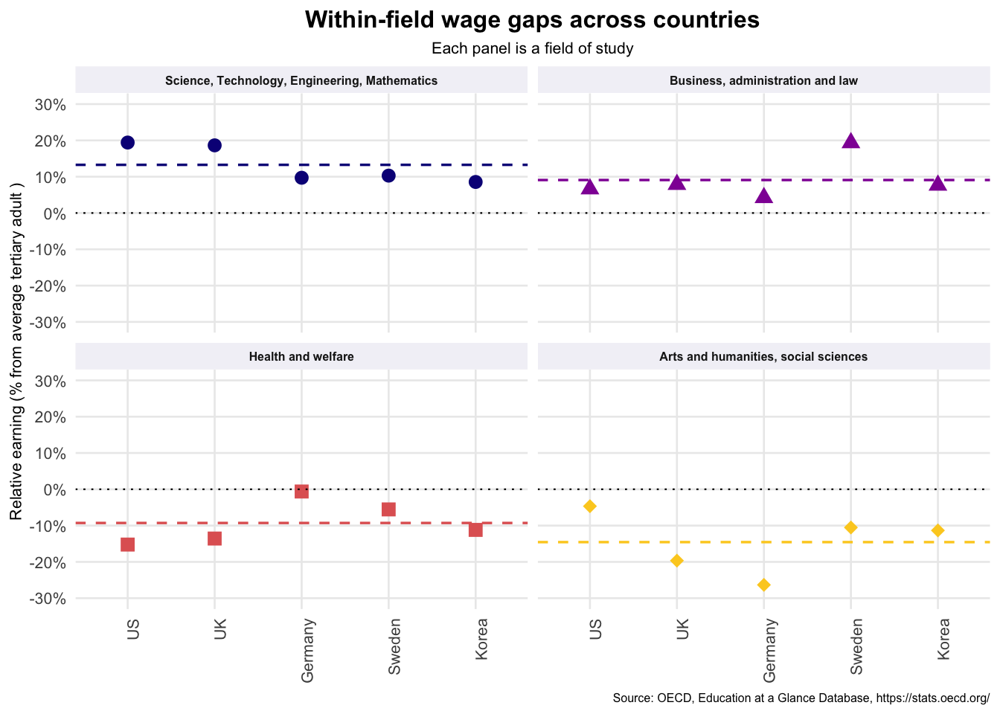
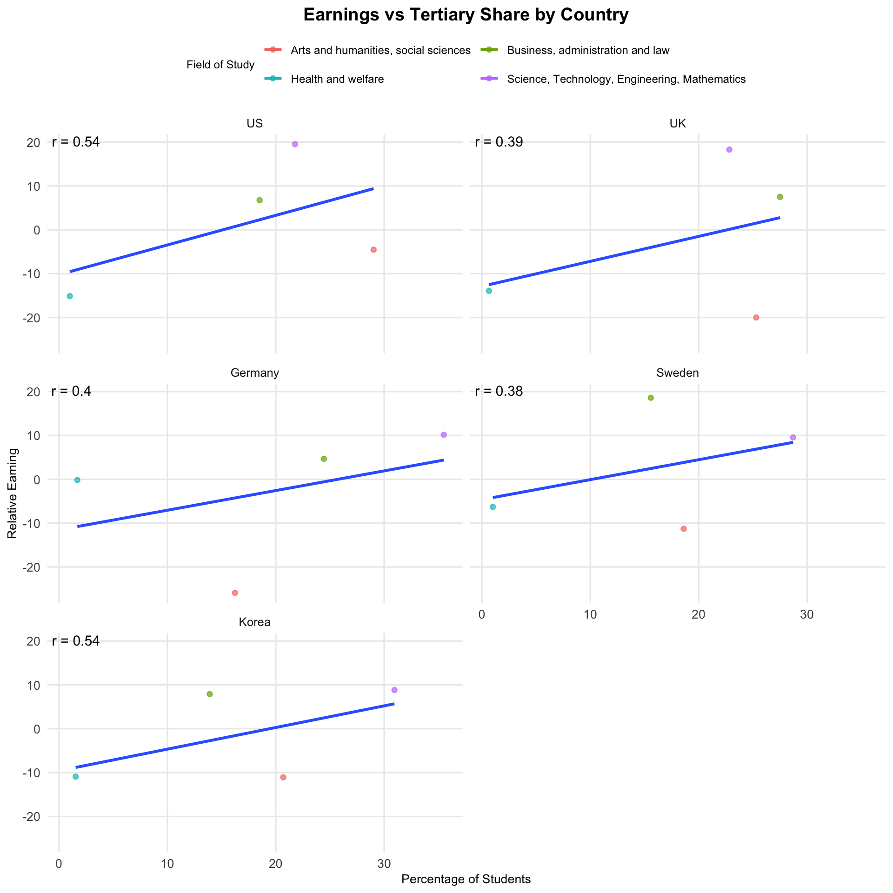
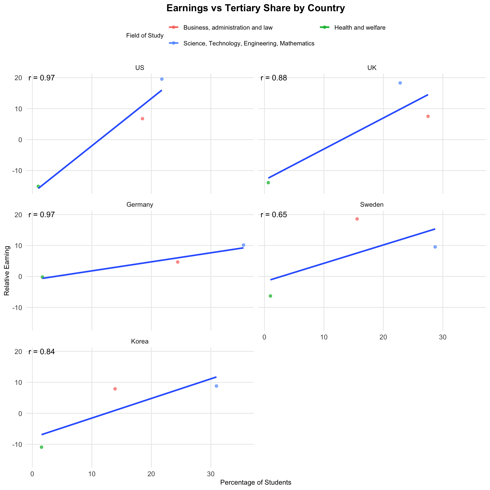

dt_earning_field <-read_excel(tf, sheet =12, range ="B44:H63")glimpse(dt_earning_field)
Rows: 19
Columns: 7
$ Country <chr> "De…
$ Notes <chr> NA,…
$ `Country & Notes` <chr> "De…
$ `Arts and humanities, social sciences, journalism and information` <dbl> -3.…
$ `Science, Technology, Engineering et Mathematics (STEM)` <dbl> 9.2…
$ `Business, administration and law` <dbl> 19.…
$ `Health and welfare` <dbl> -16…
al_country <-c("France","Germany","Sweden","Spain","United States","United Kingdom","Japan","Korea")dt_earning_field <- dt_earning_field %>%pivot_longer(cols =c(`Arts and humanities, social sciences, journalism and information`,`Science, Technology, Engineering et Mathematics (STEM)`,`Business, administration and law`,`Health and welfare` ),names_to ="Field of Study",values_to ="Relative Earning" ) %>%select("Country",`Field of Study`,`Relative Earning`) %>%filter(Country %in% al_country)glimpse(dt_earning_field)
Rows: 20
Columns: 3
$ Country <chr> "Sweden", "Sweden", "Sweden", "Sweden", "Korea", "K…
$ `Field of Study` <chr> "Arts and humanities, social sciences, journalism a…
$ `Relative Earning` <dbl> -11.284378, 9.539635, 18.582085, -6.299454, -11.065…
dt_earning_field$Country <-factor( dt_earning_field$Country,levels =c("United States", "United Kingdom", # English-speaking"France", "Germany", "Sweden", "Spain", # Europe"Japan", "Korea"# Asia ))dt_earning_field$`Field of Study`<-factor( dt_earning_field$`Field of Study`,levels =c("Science, Technology, Engineering et Mathematics (STEM)","Business, administration and law","Health and welfare","Arts and humanities, social sciences, journalism and information" ))dt_earning_field<- dt_earning_field %>%mutate(`Field of Study`=recode(`Field of Study`,"Science, Technology, Engineering et Mathematics (STEM)"="Science, Technology, Engineering, Mathematics","Arts and humanities, social sciences, journalism and information"="Arts and humanities, social sciences" ),Country =recode(Country,"United States"="US","United Kingdom"="UK" ) )earn_field <-ggplot( dt_earning_field,aes(x = Country, y =`Relative Earning`, shape =`Field of Study`,color =`Field of Study`)) +scale_shape_manual(values =c(16, 17, 15, 18)) +geom_point(size =3, position =position_jitter(height =0.8, width =0)) +scale_color_viridis_d(option ="C", end =0.9) +labs(title ="Relative Earnings by Field of Study across Countries",subtitle ="25-64 year-old full-time full-year workers, percentage difference from average earnings",caption ="Source: OECD, Education at a Glance Database, https://stats.oecd.org/",x =NULL,y ="Relative earning (% from average tertiary adult )",color ="Field of Study",shape ="Field of Study" ) +theme_minimal(base_size =10) +theme(legend.position ="top",legend.box ="vertical",legend.title =element_text(size =7),legend.text =element_text(size =7),axis.text.y =element_text(size =8),axis.text.x =element_text(size =8),axis.title.y =element_text(size =8),plot.caption =element_text(size =6),panel.grid.minor =element_blank(),plot.title =element_text(face ="bold", hjust =0.5),plot.subtitle =element_text(size =8, hjust =0.5) ) +guides(shape =guide_legend(nrow =2, byrow =TRUE) ) +scale_y_continuous(breaks =seq(-30, 30, by =10),limits =c(-30, 30),labels =label_percent(accuracy =1, scale =1) )earn_field
Across advanced economies, STEM and business degrees yield significant positive wage premiums, especially in Anglo-Saxon markets, whereas health and arts fields tend to underperform. This highlights persistent labor-market stratification by field of study and suggests that socially essential occupations, particularly in health, may be structurally undervalued.
Question 5
How much wage inequality exists within the same field of study between countries?
field_mean <- dt_earning_field %>%group_by(`Field of Study`) %>%summarise(mu =mean(`Relative Earning`, na.rm =TRUE), .groups ="drop")field_facet <- earn_field +geom_hline(yintercept =0, linetype ="dotted", linewidth =0.4) +geom_hline(data = field_mean, aes(yintercept = mu, color =`Field of Study`),linetype ="dashed", linewidth =0.6, show.legend =FALSE) +facet_wrap(~`Field of Study`, ncol =2) +guides(color ="none", shape ="none") +labs(title ="Within-field wage gaps across countries",subtitle ="Each panel is a field of study" ) +theme(strip.text =element_text(size =6, face ="bold"), strip.background =element_rect(fill ="#f2f2f7", colour =NA),axis.text.x =element_text(angle =90, hjust =1) )field_facet

While STEM and business graduates consistently earn wage premiums across countries, the relative earnings of arts and health graduates vary more widely — ranging from modest penalties to substantial wage disadvantages depending on the country. This suggests that non-STEM labor market returns are more sensitive to national institutional and labor-market conditions, indicating greater cross-country inequality within these fields.
Question 6
Is there any correlation between field of study in tertiary education and wages?
grads_raw <-read_excel(tmpf, skip =7)grads_re <- grads_raw %>%mutate(Country_raw =`(EDUCATION_FIELD) Field of education...1`,# extract the part after ") "Country =sub("^\\([^\\)]+\\)\\s*", "", Country_raw),`Arts and humanities, social sciences`=rowSums(across(5:6, ~as.numeric(.)), na.rm =TRUE),`Business, administration and law`=as.numeric(.[[7]]),`Science, Technology, Engineering, Mathematics`=rowSums(across(8:10, ~as.numeric(.)), na.rm =TRUE),`Health and welfare`=as.numeric(.[[11]]) ) %>%pivot_longer(cols =c(`Arts and humanities, social sciences`,`Science, Technology, Engineering, Mathematics`,`Business, administration and law`,`Health and welfare` ),names_to ="Field of Study",values_to ="Percentage of Students" ) %>%select( Country,"Field of Study","Percentage of Students" ) %>%mutate(Country =recode(Country,"United States"="US","United Kingdom"="UK" ))dt_earn_perc_field <- dt_earning_field %>%left_join(grads_re, by =c("Country", "Field of Study")) %>%select(Country, `Field of Study`,`Relative Earning`,`Percentage of Students`)dt_earn_perc_field$Country <-factor( dt_earn_perc_field$Country,levels =c("US", "UK", # English-speaking"France", "Germany", "Sweden", "Spain", # Europe"Japan", "Korea"# Asia ))corr_country <- dt_earn_perc_field %>%group_by(Country) %>%summarise(corr =cor(`Relative Earning`, `Percentage of Students`,use ="complete.obs", method ="pearson") )#Find relative earning and grad population corr by countrydf_plot <- dt_earn_perc_field %>%left_join(corr_country, by ="Country")ggplot(df_plot,aes(x =`Percentage of Students`, y =`Relative Earning`, color =`Field of Study`)) +geom_point(alpha =0.7) +geom_smooth(aes(group =1, color =NULL), method ="lm", se =FALSE) +labs(x ="Percentage of Students", y ="Relative Earning",title ="Earnings vs Tertiary Share by Country") +facet_wrap(~ Country, ncol =2, scales ="fixed") +geom_text(data = corr_country,aes(x =-Inf, y =Inf, label =paste0("r = ", round(corr, 2))),hjust =-0.1, vjust =1.2,color ="black", size =4,inherit.aes =FALSE ) +theme_minimal(base_size =12) +theme(legend.position ="top",legend.box ="vertical",legend.title =element_text(size =9),legend.text =element_text(size =9),axis.text.y =element_text(size =10),axis.text.x =element_text(size =10),axis.title.x =element_text(size =10),axis.title.y =element_text(size =10),plot.caption =element_text(size =8),panel.grid.minor =element_blank(),plot.title =element_text(face ="bold", hjust =0.5),plot.subtitle =element_text(size =10, hjust =0.5) ) +guides(color =guide_legend(nrow =2, byrow =TRUE) )

This figure plots the relationship between each field’s share of tertiary graduates and its relative earnings across countries. In most countries, fields with a larger share of graduates tend to have higher earnings, reflected in the positive slope of the fitted lines. \ However, the Arts and humanities field consistently sits well below the trend and appears furthest from the fitted line. This indicates that its labor-market returns are less aligned with enrollment patterns compared with other disciplines. In other words, even where Arts graduates represent a meaningful share of students, their relative earnings remain low. \ Because the Arts field behaves differently from STEM, business, and health—where earnings premiums track more closely with participation—it weakens the overall correlation. This likely reflects the fact that returns to non-STEM degrees depend more on country-specific labor-market structures, cultural funding, and institutional factors, leading to greater cross-country variation. For this reason, we next re-estimate the correlation excluding Arts, to examine whether the underlying relationship becomes stronger once this outlier field is removed.
# Exclude Arts and humanities, social sciences for correlationdf_no_art <- df_plot %>%filter(`Field of Study`!="Arts and humanities, social sciences")corr_country_no_art <- df_no_art %>%group_by(Country) %>%summarise(corr =cor(`Percentage of Students`, `Relative Earning`,use ="complete.obs", method ="pearson") )ggplot(df_no_art,aes(x =`Percentage of Students`, y =`Relative Earning`, color =`Field of Study`)) +geom_point(alpha =0.7) +geom_smooth(aes(group =1, color =NULL), method ="lm", se =FALSE) +labs(x ="Percentage of Students", y ="Relative Earning",title ="Earnings vs Tertiary Share by Country") +facet_wrap(~ Country, ncol =2, scales ="fixed") +geom_text(data = corr_country_no_art,aes(x =-Inf, y =Inf, label =paste0("r = ", round(corr, 2))),hjust =-0.1, vjust =1.2,color ="black", size =4,inherit.aes =FALSE ) +theme_minimal(base_size =12) +theme(legend.position ="top",legend.box ="vertical",legend.title =element_text(size =9),legend.text =element_text(size =9),axis.text.y =element_text(size =10),axis.text.x =element_text(size =10),axis.title.x =element_text(size =10),axis.title.y =element_text(size =10),plot.caption =element_text(size =8),panel.grid.minor =element_blank(),plot.title =element_text(face ="bold", hjust =0.5),plot.subtitle =element_text(size =10, hjust =0.5) ) +guides(color =guide_legend(nrow =2, byrow =TRUE) )

Excluding the Arts field reveals a strong and robust positive relationship between tertiary specialization and earnings across countries. This suggests that, unlike Arts—which has highly variable returns across national labor markets—STEM and business fields show more uniform, market-driven patterns of reward internationally, reinforcing the idea that labor-market demand for these skills is globally persistent.